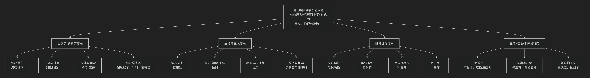

当代欧陆哲学的一个分类
对当代欧陆哲学进行分类是一项极具挑战但又至关重要的任务。传统的按“主义”或“学派”线性划分的方式，已难以捕捉其错综复杂的“思想生态”。当代欧陆哲学更像一个 “问题网络”或“思想星座” ，各路径相互交叉、批判与融合。
为了更直观地把握其脉络，下图呈现了一个以“核心问题”为牵引的当代欧陆哲学思想图谱：

以下，我们将以这张图谱为线索，详细解析这四大相互交织的谱系。
谱系一：现象学-解释学谱系（追问“存在”与“理解”）
此谱系是欧陆哲学的“隐性主干”，从未真正离开。它关注人的存在、意识、理解和体验如何构成世界。
核心问题：在形而上学崩塌后，意义和真理如何从我们的在世存在和理解活动中涌现？
关键人物与转向：
海德格尔： 将现象学从“意识”转向“存在”，奠定了整个谱系的基调。
列维纳斯： 将现象学的焦点从“自我”转向 “他者” ，将伦理学确立为第一哲学。
梅洛-庞蒂： 从“意识”转向 “身体” ，强调知觉和身体是我们与世界交往的原初方式。
伽达默尔、利科、瓦蒂莫： 发展了解释学，探讨理解的历史性、叙事性与创造性。
谱系二：后结构主义谱系（解构“主体”与“理性”）
这是20世纪下半叶最引人注目的力量，对现代性的核心概念（主体、理性、真理、意义）进行激进批判。
核心问题：如果“主体”不是意义的主宰，而是被语言、无意识、权力关系所建构的，那么思想该如何进行？
关键人物与主题：
德里达： 解构 文字、语言和哲学概念的形而上学基础，揭示其内在的矛盾与延异。
福柯： 分析 权力、知识 与 主体 的共生关系，揭示现代社会如何通过话语和制度塑造人。
德勒兹与加塔利： 创造 “根茎”、“欲望机器” 等概念，反对僵化的树状结构，倡导差异、生成和流变的思想。
拉康： 用结构语言学重读弗洛伊德，提出 “无意识像语言一样结构” ，颠覆了传统的自主主体观念。
谱系三：批判理论谱系（诊断社会与寻求解放）
从法兰克福学派发展而来，紧密结合社会现实，旨在批判社会不公并寻求解放路径。
核心问题：在复杂的现代社会中，如何诊断病理、批判意识形态，并找到理性与解放的可能性？
关键人物与演进：
哈贝马斯： 从工具理性批判转向 交往行为理论，试图在语言交往中为理性和规范找到新的基础。
霍耐特： 发展 “为承认而斗争” 的理论，将社会冲突的根源归于主体间对承认的需求。
利奥塔： 宣告 “宏大叙事的终结”，走向对差异和悖谬的后现代辩护。
墨菲： 倡导 “激进民主”，认为政治的本质不是达成共识，而是在承认对抗不可消除的前提下，建构“我们”与“他们”的对立。
谱系四：生命-政治-本体论的“转向”浪潮（21世纪的新前沿）
这是近期最活跃的领域，共同特点是试图超越“语言转向”的局限，直接思考生命、物质和实在本身。
核心问题：如何直接思考非人力量（生命、技术、物质、实在）及其与政治、伦理的关系？
关键动向：
生命政治： 福柯思想的延续，探讨权力如何管理、优化和控制“生命”本身。
阿甘本： “赤裸生命”、“例外状态”。
埃斯波西托： “免疫范式”、“生命政治”的肯定性视角。
思辨实在论/新唯物主义： 反对哲学只关注人类如何“ access ”世界，主张探索独立于思想的“实在本身”。
梅亚苏： 批判“关联主义”，提出“偶然性必然性”。
布拉西耶： 思考“无思”的实在，提出“世界非实存”的激进命题。
巴迪欧： 用数学本体论思考“存在”与“事件”。
拉图尔： “行动者网络理论”，消解自然/社会、人/物的二元对立。
总结：一个动态的思想星座
思想谱系 |
核心关切 |
关键词 |
|---|---|---|
现象学-解释学 |
存在、理解、他者、身体、生活世界 |
在世存在、诠释、他者性、具身化 |
后结构主义 |
权力、差异、解构、欲望、无意识 |
解构、权力/知识、生成、延异 |
批判理论 |
社会理性、解放、承认、民主、正义 |
交往理性、承认斗争、激进民主 |
新前沿转向 |
生命、物质、实在、非人、技术 |
生命政治、思辨实在论、新唯物主义 |
重要提示：
交叉性：这些分类是流动的。例如，阿甘本的思想深深植根于海德格尔和福柯；巴迪欧的数学本体论也是对德勒兹的回应。
问题导向：最好的方式不是记住流派，而是追踪他们共同处理的核心问题，例如：主体性的命运、他者的伦理要求、权力与自由的关系、在虚无中如何奠基规范等。
因此，当代欧陆哲学是一幅由批判、重建、转向共同绘制的、充满张力的思想地图。它不再提供统一的答案，而是持续地、富有创造力地提出关于我们自身和世界的最根本问题。